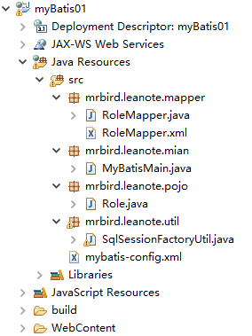

准备工作
创建表t_role：
1 | create table T_ROLE( |
eclipse文件路径：

各文件说明：
| 文件 | 作用 |
| MyBatisMain.java | 运行MyBatis程序的入口，包含main方法 |
| RoleMapper.java | 映射器 |
| RoleMapper.xml | 映射器配置文件 |
| Role.java | POJO |
| SqlSessionFactoryUtil.java | 构建SqlSessionFactory，并创建SqlSession |
| mybatis-config.xml | MyBatis配置 |
配置mybatis-config.xml
1 |
|
构建SqlSessionFactory
利用mybatis-config.xml完成SqlSessionFactory的构建，并创建SqlSession。采用单例的形式构建SqlSessionFactory。
1 | package mrbird.leanote.util; |
POJO
创建一个与库表对应的POJO：
1 | package mrbird.leanote.pojo; |
接口与映射文件
新建一个RoleMapper接口，包含简单的CRUD抽象方法：
1 | package mrbird.leanote.mapper; |
编写RoleMapper.xml映射文件，让其自动映射RoleMapper interface：
1 |
|
测试
测试插入数据：
1 | package mrbird.leanote.mian; |
运行后查询数据库：
1 | mysql> select * from t_role; |
创建成功。
测试删除：
1 | public class MyBatisMain { |
运行后查询数据库：
1 | mysql> select * from t_role; |
删除成功。